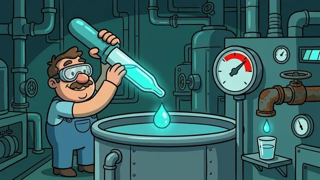
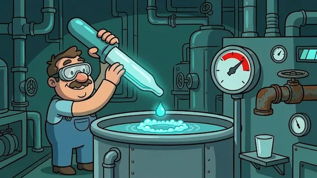
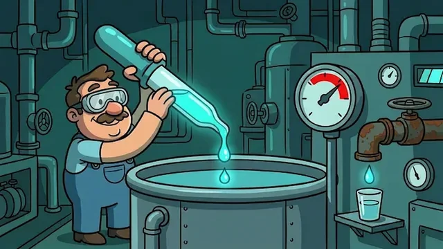
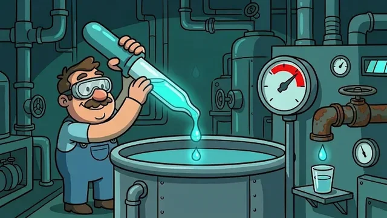
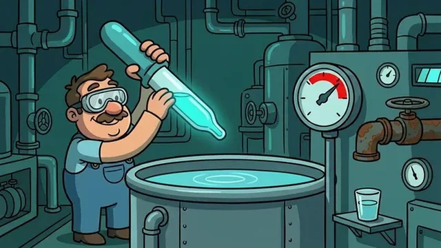

Candidata v6 — 5 s, 10 desenhos IA, loop perfeito

10 keyframes gerados por IA a partir do poster (âncora única, 1 mudança por edição). Contêiner 10 fps · 500 ms por desenho.
Frame original (Q01) — a âncora

Poster aprovado: entrada de todas as gerações e quadro de abertura/fechamento. Nunca é substituído.
QA de consistência (tools/animia/qa_frames.py)
| PASS | Q1_anchor_diff | {"diffs": [2.3, 3.8, 5.3, 3.4, 6.7, 3.8, 4.3, 5.5, 3.2]} |
| PASS | Q2_anchor_hue | {"shares": [0.957, 0.962, 0.952, 0.932, 0.954, 0.956, 0.963, 0.95, 0.965]} |
| PASS | Q3_delta_progress | {"deltas": [1.7, 1.7, 3.6, 4.6, 6.1, 5.3, 2.4, 3.5, 3.0]} |
| PASS | Q4_brightness | {"std": 1.24, "means": [82.9, 82.3, 81.5, 83.9, 83.9, 86.2, 83.1, 82.5, 82.5, 82.5]} |
| FAIL | Q5_palette_shift | {"worst_bin": 0.0668, "frame": 5} |
| PASS | Q6_loop_closure | {"close": 3.17} |
| PASS | Q7_palette_count | {"counts": [0, 0, 0, 0, 0, 0, 0, 0, 0], "poster": 3} |
Os 10 desenhos





Roteiro dos 5 s (beats)
| Q00 · 0–500 ms | Q01 · repouso: cientista segura a pipeta com uma gota prestes a cair (o POSTER) |
| Q01 · 500–1000 ms | Q02 · a gota estica e duas companhias se soltam (antecipação da dose) |
| Q02 · 1000–1500 ms | Q03 · três gotas caem em linha (a fórmula being dosada) |
| Q03 · 1500–2000 ms | Q04 · SPLASH: coroa de líquido brilha no poço (o pico da ação) |
| Q04 · 2000–2500 ms | Q05 · espuma e ondulação assentam (a dose foi absorvida) [reprovado no Q5 — regenerar] |
| Q05 · 2500–3000 ms | Q06 · manômetro estoura no vermelho + torneira pinga (a máquina reage) |
| Q06 · 3000–3500 ms | Q07 · o copinho da mesa TRANSBORDA brilhando (a piada: nunca é suficiente) |
| Q07 · 3500–4000 ms | Q08 · poço calmo, ponteiro voltando (resolução) |
| Q08 · 4000–4500 ms | Q09 · cientista relaxa os braços (assentamento) |
| Q09 · 4500–5000 ms | Q10 · volta exata ao estado do Q01 (loop perfeito) |
PORTÃO 1 — board. Aprovado implicitly nesta rodada-piloto (dono pediu o método).
PORTÃO 2 — clip. CANDIDATA — k05 reprovado no lint Q5 (poço brilhando além do beat; regeneração por IA na próxima rodada). Não promovido: aguarda QA 10/10 verde e o ok do dono.
Método: docs/ANIM_V6_METODO_IA.md